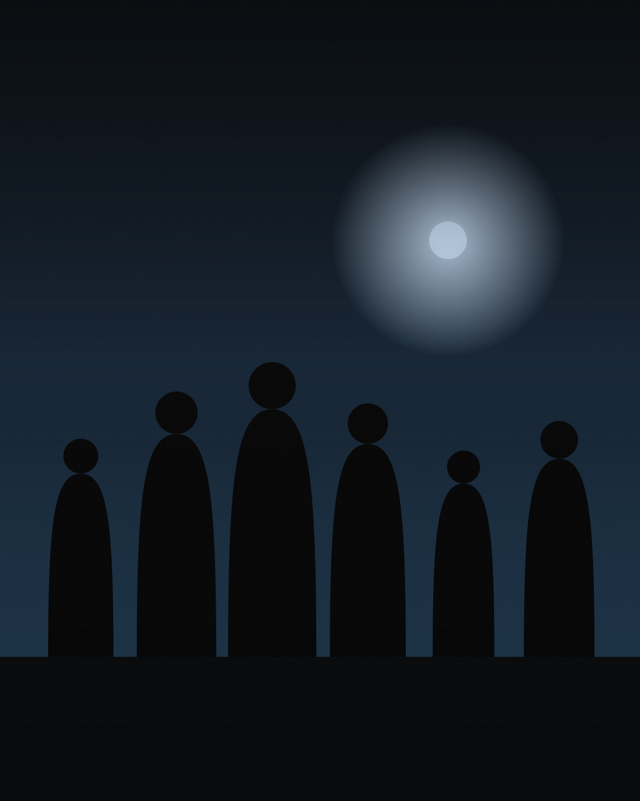
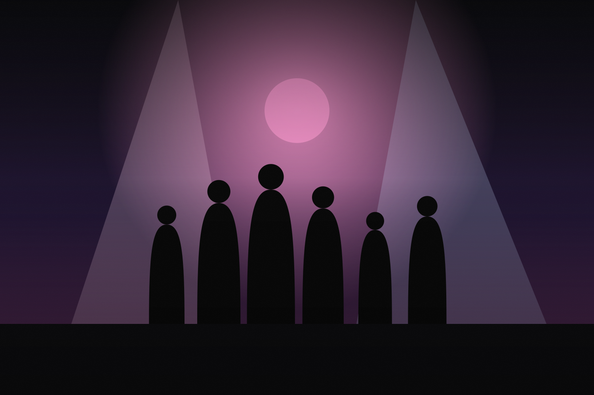
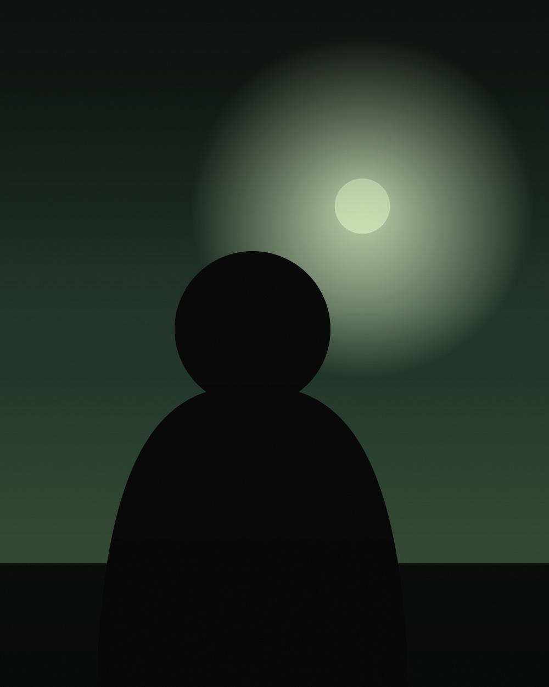

Casamentos
Preparativos, cerimônia e festa. Cobertura contínua com flash disponível para ambientes internos e a noite.
Orçamento sob medida
ANYEL C. GONZÁLEZ · ARTISTA VISUAL
Cobertura documental de casamentos, eventos e marca pessoal. Retrato, produto e natureza sob encomenda.
01 — PORTFÓLIO
Cada entrega é editada em um mesmo tom: cor fiel, contraste medido, nada de filtros que envelhecem.






Ainda não há nada por aqui.
02 — SERVIÇOS
Preparativos, cerimônia e festa. Cobertura contínua com flash disponível para ambientes internos e a noite.
Orçamento sob medida
Corporativos, culturais e esportivos. Registro de momentos, retratos rápidos e material pronto para imprensa ou redes.
Por hora ou diária
Retratos e cenas de trabalho para perfis profissionais, sites e campanhas. Vários enquadramentos por sessão.
Sessão de 1 a 3 h
Também sob encomenda

03 — SOBRE MIM
Sou fotógrafa e artista visual. Trabalho principalmente com casamentos, eventos e marca pessoal, e me interessa o registro honesto: pessoas à vontade, luz real, pouca direção.
Também cubro produto, natureza, pets e esporte quando o trabalho pede. Antes de cada trabalho conversamos sobre o local, a luz e o ritmo do dia.
04 — PROCESSO
Você me conta data, local e o que espera das fotos.
Horas de cobertura, entregáveis e preço fechado por escrito.
O dia do trabalho. Pouca direção, muita observação.
Seleção editada em galeria online, com download em alta resolução.
05 — CLIENTES
“Ela ficou o dia todo e quase não percebemos. As fotos parecem lembranças, não poses.”
“Entregou o material no prazo e com o enquadramento que precisávamos para a imprensa.”
“Usei os retratos no meu site e no LinkedIn. Mudou completamente como me apresento.”
06 — PERGUNTAS FREQUENTES
Uma prévia em 72 h e a galeria completa entre 10 e 20 dias, dependendo do tamanho do trabalho.
Sim. O deslocamento é somado ao orçamento e combinado antes de reservar a data.
Com um sinal sobre o total. Até esse momento, a data continua aberta para outros clientes.
07 — CONTATO
Respondo em menos de 24 h com disponibilidade e orçamento. Se preferir, me escreva direto pelo WhatsApp.